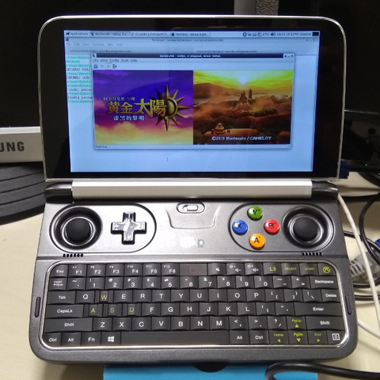

Steward
分享是一種喜悅、更是一種幸福
掌機 - GPD Win2 - Debian 9.0 - Build desmume 0.9.11
參考資訊：
https://wiki.desmume.org/index.php?title=Installing_DeSmuME_from_source_on_Linux
RetroArch模擬器在載入NDS遊戲時(黃金太陽)，會有聲音不同步以及掉FPS的問題，司徒原本以為是RetroArch架構的問題，因此嘗試編譯獨立的DeSmuME模擬器，看看是否有改善，只是結果還是一樣，問題沒有得到解決，不過司徒覺得應該是優化問題，目前只能再找時間研究程式碼，看看是否可以改善，不過司徒還是把編譯的步驟寫下，供以後參考：
$ sudo apt-get install build-essential autoconf automake libgtk2.0-dev libglu1-mesa-dev libsdl1.2-dev libglade2-dev gettext zlib1g-dev libosmesa6-dev intltool libagg-dev libasound2-dev libsoundtouch-dev libpcap-dev
$ cd
$ wget http://sourceforge.net/projects/desmume/files/desmume/0.9.11/desmume-0.9.11.tar.gz/download
$ mv download desmume-0.9.11.tar.gz
$ tar xvzf desmume-0.9.11.tar.gz
$ cd desmume-0.9.11
$ ./configure
$ vim src/Makefile +430
CPPFLAGS = -fpermissive
$ make
編譯過程中，竟然發生錯誤，司徒只好使用快速修復方式修補
--- ../old/src/wifi.cpp 2015-02-14 23:05:26.000000000 +0800
+++ ../new/src/wifi.cpp 2018-08-16 18:21:43.680568654 +0800
@@ -314,9 +314,9 @@
#if (WIFI_LOGGING_LEVEL >= 1)
#if WIFI_LOG_USE_LOGC
- #define WIFI_LOG(level, ...) if(level <= WIFI_LOGGING_LEVEL) LOGC(8, "WIFI: "__VA_ARGS__);
+ #define WIFI_LOG(level, ...) if(level <= WIFI_LOGGING_LEVEL) LOGC(8, __VA_ARGS__);
#else
- #define WIFI_LOG(level, ...) if(level <= WIFI_LOGGING_LEVEL) printf("WIFI: "__VA_ARGS__);
+ #define WIFI_LOG(level, ...) if(level <= WIFI_LOGGING_LEVEL) printf(__VA_ARGS__);
#endif
#else
#define WIFI_LOG(level, ...) {}
--- old/src/ctrlssdl.cpp 2015-02-14 23:05:26.000000000 +0800
+++ new/src/ctrlssdl.cpp 2018-08-16 18:25:45.586399269 +0800
@@ -200,7 +200,7 @@
break;
case SDL_JOYAXISMOTION:
/* Dead zone of 50% */
- if( (abs(event.jaxis.value) >> 14) != 0 )
+ /*if( (abs(event.jaxis.value) >> 14) != 0 )
{
key = ((event.jaxis.which & 15) << 12) | JOY_AXIS << 8 | ((event.jaxis.axis & 127) << 1);
if (event.jaxis.value > 0) {
@@ -210,7 +210,7 @@
else
printf( "Device: %d; Axis: %d (-)\n", event.jaxis.which, event.jaxis.axis );
done = TRUE;
- }
+ }*/
break;
case SDL_JOYHATMOTION:
/* Diagonal positions will be treated as two separate keys being activated, rather than a single diagonal key. */
@@ -370,7 +370,7 @@
Note: button constants have a 1bit offset. */
case SDL_JOYAXISMOTION:
key_code = ((event->jaxis.which & 15) << 12) | JOY_AXIS << 8 | ((event->jaxis.axis & 127) << 1);
- if( (abs(event->jaxis.value) >> 14) != 0 )
+ /*if( (abs(event->jaxis.value) >> 14) != 0 )
{
if (event->jaxis.value > 0)
key_code |= 1;
@@ -390,7 +390,7 @@
RM_KEY( *keypad, key );
if (key_o != 0)
RM_KEY( *keypad, key_o );
- }
+ }*/
break;
case SDL_JOYHATMOTION:
再次編譯
$ make $ ./src/gtk/desmume --cpu-mode=1
完成
